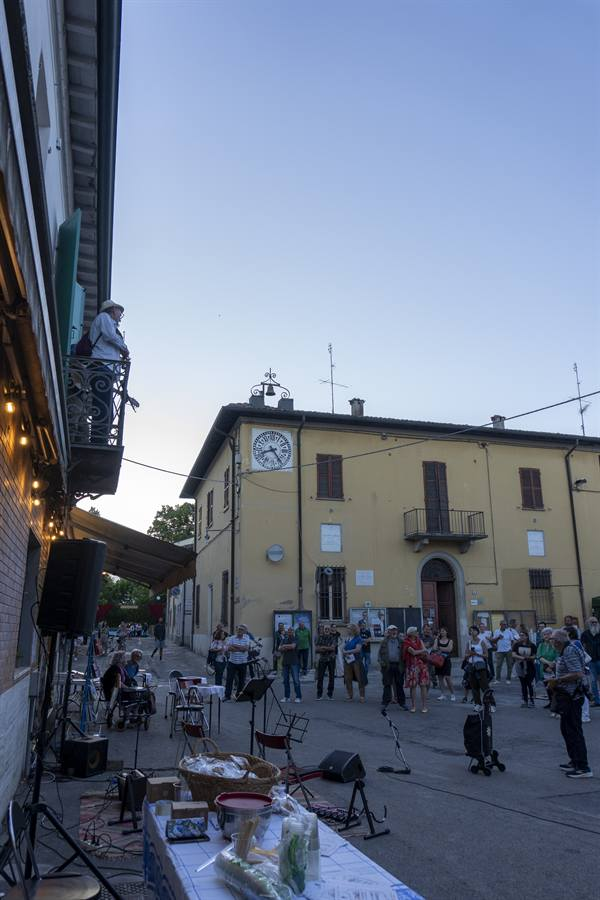

Fotografo & Videomaker — Romagna
Fotografo quello che succede qui.
Eventi, sport e cultura in Romagna — foto e video per chi organizza, gareggia e va in scena.
— Lavori
Portfolio

di lavori
— Chi sono
Ciao, sono Luca.
Ho cominciato a fotografare sul serio nel 2026 e da allora seguo quello che succede dalle mie parti: gare podistiche, partite serali, eventi di piazza, teatro fra le case. Sono i lavori che trovi qui sopra, tutti girati fra aprile e giugno di quest'anno.
Lavoro in Romagna, fra Modigliana, Faenza e Granarolo. Faccio sia le foto sia i video: dalla stessa giornata possono uscire il servizio fotografico e i verticali pronti per i social.
— Cosa faccio
Servizi
Eventi e manifestazioni
Sagre, feste, iniziative pubbliche e comunali: seguo la giornata dall'allestimento alla chiusura e consegno la selezione pronta da pubblicare.
Sport
Corse, partite e gare: le foto d'azione e tutto il contorno — la partenza, il pubblico, l'arrivo.
Cultura e documentazione
Spettacoli, rassegne e progetti per enti, musei e associazioni, anche in condizioni di luce difficili.
Video verticali per social
Reel girati e montati per Instagram e TikTok, con testi a schermo: pronti da caricare.
Ti serve qualcosa che non è in elenco? Scrivimi lo stesso: al momento lavoro un po' su tutto.
— Lavoriamo insieme
Hai un progetto
in mente?
Hai un evento, una gara o uno spettacolo da far raccontare? Scrivimi due righe su cosa ti serve e quando: ti rispondo con una proposta.